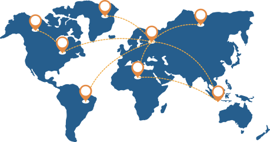
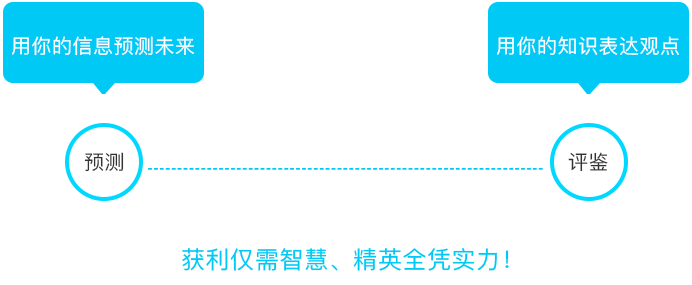
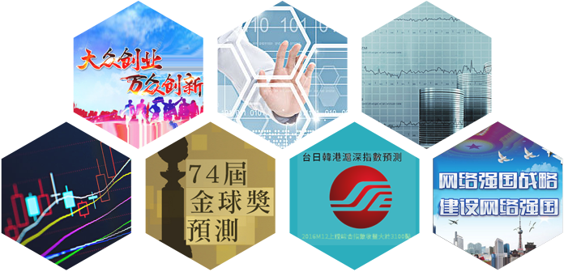

1988年6月1日，爱荷华政治股票市场在爱荷华州立大学开张，预测当年的美国总统选举。结果不仅正确预测了当年的总统当选人，而且预测的候选人的得票率比传统民调更接近靶心（实际得票率），因此一炮而红！
爱荷华政治股票市场是历史上最早的预测市场实例。随着互联网的普及，爱荷华政治股票市场于1992年上线，更名为爱荷华电子市场开张，即IEM，持续经营至今。

随着IEM的预测准确性被不断验证，预测的题材也由政治选举扩展到预测流行病疫情和疫苗效果（如[爱荷华卫生市场]）、电影票房（如［好莱坞股票交易所］），再到社会、经济、财经、金融、体育、娱乐、科技等。预测市场平台也从美国延展到了英国、爱尔兰、法国等欧美国家。预测市场机制也不仅用于对未来事件的预测，也被广泛用于对于创新、科研决策评审等。
2006年7月20日，台湾政治大学预测市场研究中心正式成立[未来事件交易所]，将预测市场引入到了宝岛台湾。

2017年1月，未来无限网正式上线，标志着预测市场这一互联网平台在大陆市场的开端！
未来无限网 ———专注预测与评鉴的互联网平台
以欧美成熟理论研究和成功实践为基础;
自主开发，拥有完全自主知识产权;
核心是结合互联网技术应用的最新发展;
以仿真交易市场模式;
通过独特的交易机制设计;
萃取群体智慧;
对未来事件做出预判、或者对项目／创意进行评鉴;
未来无限网 ———专注预测与评鉴的互联网平台
以欧美成熟理论研究和成功实践为基础;
自主开发，拥有完全自主知识产权;
核心是结合互联网技术应用的最新发展;
以仿真交易市场模;
通过独特的交易机制设计;
萃取群体智慧;
对未来事件做出预判、或者对项目／创意进行评鉴;
未来无限网平台让会员可以恣意挥洒自己智慧，通过参与预测和评鉴， 实现自我价值，获取成就：

参与预测可以赢取奖励外，参与项目评鉴的会员还将有机会获得：
-
参与者可获得劳动报酬；
-
优胜者获得专家报酬；
-
最优者获撰写报告资格，并获得额外的专家报酬；
-
提交的创新项目获得评鉴机会；
-
优秀的创新项目获得立项和资金支持；
-
充分展示自己，通过参与评鉴脱颖而出；
未来无限网平台作为一种新型的决策辅助工具，符合网络强国、军民融合、大众创业、万众创新的国家战略。

未来无限网平台的创新模式，利用互联网扁平化、交互式、快捷性优势，推进政府决策科学化，用信息化手段更好感知社会态势、畅通沟通渠道、辅助决策；
-
决策辅助
科学决策的辅助工具；
专家意见的有效补充；
提高决策的透明度；
降低决策成本；
有效管理风险；
合理配置资源；
-
汇聚信息
汇集有用资讯；
了解群众的意见；
-
舆论导向
引导民意；
汇集共识；
-
服务创新
公开、公正、公平；
评鉴机制；
广泛参与；
多元意见；
获取创新思路；
易执行、低成本；
-
发掘人才
发现个体精英；
发掘群体智慧潜能；
储备人才；